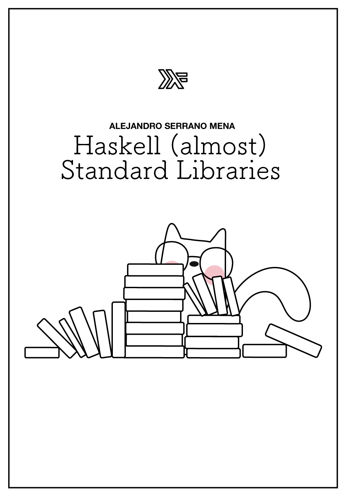

class: center, middle, title-slide count: false  .less-line-height[ Alejandro Serrano @ ZuriHac 2022 .grey[🐦 @trupill - 🐈⬛ serras - 👨💻 Tweag] ] --- # 🥅 Overall goal ### .grey[How do we build software with Haskell?] 1. ~~Domain-specific languages <br /> Representing actions and scripts <br /> Property-based testing~~ 2. Communicating over the network <br /> Serialization (without boilerplate) <br /> Error handling <br /> Concurrency across threads --- # 🃏 Overall goal ### .grey[Build an interactive card game] 1. Represent the cards and the actions 2. Communicate different clients <table> <tr> <td style="vertical-align: top"><img src="img/pikachucard.png" width="100%" /></td> <td width="82%" style="padding-left: 20px; line-height: 1.3;"> <h3 style="margin-bottom: -20px"><img src="img/pikachu.png" width="32px" /> Pokémon Trading Card Game</h3> <p>Goal: knock out 6 of your opponent's Pokémon using attacks</p> </td> </tr> </table> --- # 🃏 Overall goal ### .grey[Build an interactive card game] 1. Represent the cards and the actions 2. Communicate different clients <table> <tr> <td style="vertical-align: top"><img src="img/pikachucard.png" width="100%" /></td> <td width="82%" style="padding-left: 20px; line-height: 1.3;"> <h3><img src="img/pikachu.png" width="32px" /> Pokémon Trading Card Game</h3> <h2>Waaaay too complex for 1.5h!</h2> </td> </tr> </table> --- # 🎲 Dice roll --- # 🎲 Dice roll in the cloud ☁️ --- # 📚 Our stack Haskell (of course) `network-simple` for networking `binary` and `aeson` for serialization `stm` for concurrency --- # 🎲 One-person dice roll 🔢 Client requests a roll of _n_ faces ☁️ Server returns a random value <img src="img/random_number.png" width="80%" /> .smaller[.little-margin-top[ _(mandatory XKCD strip)_ ]] --- # 🖧 Server-side `network-simple` Let's practice signature-reading skills .code70[ ```haskell serve :: MonadIO m => HostPreference -- ^ Host to bind. -> ServiceName -- ^ Server service port to bind. -> ((Socket, SockAddr) -> IO ()) -- ^ Computation to run in a different thread -- once an incoming connection is accepted. -> m a -- ^ This function never returns. ``` ] --- # 🖧 Server-side `network-simple` `serve` takes care of: - Listening all the time at the given port - Whenever a new connection request comes <br/> 1️⃣ accept it, <br /> 2️⃣ **spawn a new thread**, <br /> 3️⃣ run the callback. --- # ➿ `go` pattern Once we accept, we go into an (infinite) _loop_ - Usually with a recursive `go` function .code70[ ```haskell diceServer :: IO () diceServer = serve "*" "8080" $ \(skt, _) -> do -- initialization go skt where go :: Socket -> IO () go skt = do -- read and parse request -- send a response go skt -- and over again! ``` ] --- # 🖧 Server-side `network-simple` Requests and responses are 64-bit numbers .little-margin-top[.code70[ ```haskell go :: Socket -> IO () go skt = do -- read and parse request mayBytes <- recv skt 8 case mayBytes of Nothing -> pure () -- done Just bytes -> do let Right max = decode @Word64 bytes response <- encode <$> randomRIO (0, max) -- send a response send skt response go skt -- and over again! ``` ]] --- # 🏁 Recognizing end-of-connection If `recv` returns nothing, we stop the loop ```haskell go skt = do -- read and parse request mayBytes <- recv skt 8 case mayBytes of Nothing -> pure () -- done Just bytes -> do ... go skt -- and over again! ``` --- # 🔄 Serialization Conversion to and from `ByteString` - `cereal` for binary encoding - `aeson` for JSON - `avro` for Avro (used in Kafka) - ... --- # 🔄 Serialization Users implement instances of some classes - Just one, like `Serialize` in `cereal` - Two, like `ToJSON` and `FromJSON` And then conversion is provided by generic ```haskell encode :: Serialize a {- or -} ToFormat a => a -> ByteString decode :: Serialize a {- or -} FromFormat a => ByteString -> Either Error a ``` --- # 🪢 Type applications Help the compiler to disambiguate types ```haskell decode @Word64 bytes ``` Other possibility is `ScopedTypeVariables` --- # 🎲 One-person dice roll client ## .grey[🧑💻 Time for practice!] .font50[`serras.github.io/zurihac-workshop`] .code70[ ```haskell connect :: (MonadIO m, MonadMask m) => HostName -- ^ Server hostname or IP address. -> ServiceName -- ^ Server service port. -> ((Socket, SockAddr) -> m r) -- ^ Computation taking the communication -- socket and the server address. -> m r ``` ] --- # 🎲 One-person dice roll client ## .grey[🤔 How do I test this?] .font50[`serras.github.io/zurihac-workshop`] .code60[ ```haskell $ cabal repl session2 > import DiceRoll DiceRoll> diceServer ^C -- use Ctrl + C to stop ``` ```haskell $ cabal repl session2 > import DiceRoll DiceRoll> diceClient 6 3 DiceRoll> diceClient 10 9 ``` ] --- # ‼️ Exceptions You forget to start the server and... ``` > DiceRoll.diceClient 3 *** Exception: Network.Socket.connect: <socket: 12>: does not exist (Connection refused) ``` ## 😱 WAAAAAAT???? --- # ‼️ Exceptions Haskell's `IO` runtime uses **exceptions** - Network or connection problems - File (or resource) not found - and many more input/output problems Even some built-in features use exceptions - Pattern match failure - `undefined` and `error` --- # ⁉️ Dealing with exceptions ~~Use `Control.Exception` from `base`~~ 🅰️ Use `Control.Exception.Safe` <br /> from `safe-exceptions` 🅱️ Use `UnliftIO.Exception` from `unliftio` ### .grey[All three provide the same API] --- # ⁉️ Dealing with exceptions If you want to perform some handling ```haskell catch :: (MonadCatch m, Exception e) => m a -> (e -> m a) -> m a ``` If you want to "purify" the problem ```haskell try :: (MonadCatch m, Exception e) => m a -> m (Either e a) ``` --- # ⁉️ Idiomatic usage of `catch` .code70[ ```haskell diceClient :: Word64 -> IO (Maybe Word64) diceClient n = connect "127.0.0.1" "8080" (\(skt, _) -> do ...) `catch` (\(e :: IOException) -> pure Nothing) ``` ] - Use `catch` infix - Use `ScopedTypeVariables` to indicate which exceptions are to be caught --- # 🫅 Exception hierarchy Exception types for a hierarchy - The top is called `SomeException` However, if you want to "swallow" all exceptions, better use .code70[ ```haskell catchAny :: MonadCatch m => m a -> (SomeException -> m a) -> m a tryAny :: MonadCatch m => m a -> m (Either SomeException a) ``` ] --- # 🧰 Resource management ### .grey[Exception + laziness = 😵💫] This makes resource management challenging <br /> (even more than usual) 🅰️ Use `resourcet` <br /> 🅱️ Use `managed` <br /> ➕ `resource-pool` to handle pools of resources --- # 🎲 Dice roll and increment ### .grey[We want to extend the functionality] How do we (de)serialize command and data? 1. Express them as data types 2. Implement `Serialize` instances --- # 🎲 Dice roll and increment ### .grey[We want to extend the functionality] How do we (de)serialize command and data? 1. Express them as data types ```haskell data Request = DiceRoll { max :: Word64 } | Increment { number :: Word64 } type Response = Word64 ``` --- # 🎲 Dice roll and increment ### .grey[We want to extend the functionality] How do we (de)serialize command and data? 1. Express them as data types 2. ~~Implement `Serialize` instances~~ ## Use automatic deriving! --- # 🤖 Automatic deriving Compiler writes instances for us - `Eq`, `Show`, and others are built-in - Extensible with the `Generic` mechanism .code70[ ```haskell {-# language DeriveGeneric, DeriveAnyClass #-} data Request = DiceRoll { max :: Word64 } | Increment { number :: Word64 } deriving (Generic, Serialize) ``` ] --- # 🖧 Updated server-side ```haskell let Right max = decode @Word64 bytes response <- encode <$> randomRIO (1, max) ``` Deserialize with the new type ```haskell let Right req = decode @Request bytes response <- case req of DiceRoll max -> randomRIO (1, max) Increment n -> pure (n + 1) ``` --- # 🖧 Updated server-side ```haskell let Right max = decode @Word64 bytes response <- encode <$> randomRIO (1, max) ``` Deserialize with the new type ```haskell let Right req = decode bytes response <- case req of DiceRoll max -> randomRIO (1, max) Increment n -> pure (n + 1) ``` The type `Request` can be inferred --- # 💬 Greeting ## .grey[🧑💻 Time for practice!] .font50[`serras.github.io/zurihac-workshop`] Add a new command to say "hi!" to people Make it as flexible as you want: - Name of the person to be greeted - Language - Time of the day --- # ☁️🎲 Cloudy Rolly ☁️ Central server which processes requests 1️⃣ Player #1 joins and gets a code 2️⃣ Player #2 joins the session using that code .grey[ 🎲 Players send a new request for rolling - The server sends the winner to both players ] --- # ☁️🎲 Cloudy Rolly .grey[ ☁️ Central server which processes requests 1️⃣ Player #1 joins and gets a code 2️⃣ Player #2 joins the session using that code ] ## 🧵 Each player runs in a different thread 🪡 How to communicate across boundaries? --- # 🪡 Communication across threads ~~Use `Control.Concurrent` from `base`~~ Use `stm` (Software Transactional Memory) - Similar concept as in databases - Transactions are isolated and atomic - One cannot read the dirty state of another --- # 🪡 Software Transactional Memory One cannot read the dirty state of another ```haskell do v <- newTVarIO 0 replicateM 3 $ async $ -- 3 threads atomically $ do -- tx. boundary n <- readTVar v -- ║ writeTVar (n + 1) -- ═╝ ``` The end value of `v` is **guaranteed** to be 3 --- # ♻️ Server as state machine When a user connects... - If they send `NewGame`, send a `GameCode` - When the other player connects, </br> send `GameStarts` - If they send `JoinGame` and the code - If the code exists, send `GameStarts` - Otherwise, send `GameNotFound` and close - Otherwise, close the connection --- # 🪡 Shared state Dictionary (key-value map) - Keys are `GameCode`s - Values are the sockets -- ```haskell crServer = do -- initialize shared state state <- newTVarIO @State Map.empty serve "127.0.0.1" "8080" $ \(skt, _) -> worker state skt worker :: TVar State -> Socket -> IO () ``` --- # 👷 Cloudy Rolly worker Trick to avoid repeating `state` and `skt` .code70[ ```haskell worker :: TVar State -> Socket -> IO () worker state skt = start where start = do ... newGame = ... joinGame code = ... play = putStrLn "play!" ``` ] --- # 👷 Cloudy Rolly worker Wait for the first message to come .little-margin-top[.code70[ ```haskell worker state skt = start where start = do Just req <- recvJson skt case req of NewGame -> newGame JoinGame code -> joinGame code ``` ```haskell -- read a line and deserialize recvJson :: (MonadIO m, FromJSON a) => Socket -> m (Maybe a) ``` ] ] --- # 👷 Cloudy Rolly worker .code60[ ```haskell worker state skt = start where newGame = do -- record ourselves in new code code <- randomCode atomically $ modifyTVar state (Map.insert code [skt]) sendJson skt (GameCode code) -- wait for the other message atomically $ do Just skts <- Map.lookup code <$> readTVar state check (length skts > 1) sendJson skt GameStarts -- go! play ``` ] --- # 🌀 Retry transactions .code70[ ```haskell -- wait for the other message atomically $ do Just skts <- Map.lookup code <$> readTVar state check (length skts > 1) ``` ] - `check` aborts the tx. if the condition is `False` - The tx. is only retried when any `TVar` mentioned changes its value ### `TVar` works as a synchronization mechanism --- # 👷 Cloudy Rolly worker .code60[ ```haskell worker state skt = start where joinGame code = do found <- atomically $ do -- tx. boundary ════════════════════════════════╗ result <- Map.lookup code <$> readTVar state -- ║ case result of -- ║ Nothing -> pure False -- ║ Just skts -> do -- ║ modifyTVar state $ -- ║ Map.insertWith (<>) code [skt] -- ║ pure True -- ║ -- ═════════════════════════════════════════════╝ if found then sendJson skt GameStarts >> play else sendJson skt GameNotFound ``` ] --- # 👷 Cloudy Rolly worker .code60[ ```haskell worker state skt = start where joinGame code = do found <- atomically $ do -- tx. boundary ════════════════════════════════╗ result <- Map.lookup code <$> readTVar state -- ║ case result of -- ║ Nothing -> pure False -- ║ Just skts -> do -- ║ modifyTVar state $ -- ║ Map.insertWith (<>) code [skt] -- ║ pure True -- ║ -- ═════════════════════════════════════════════╝ ``` ] Transaction may include pure computations --- # ☁️🎲 Cloudy Rolly ## .grey[🏠🧑💻 (No more) time for practice!] ### Finish the implementation of the server 1. Change `State` to represent on-going games 2. Use `TVar` as synchronization mechanism 3. Write a single `play` implementation ### Finish the implementation of the clients --- # 🪡 STM-enabled data structures Many users `==>` lots of contention - Every `JoinGame` "wakes up" every `NewGame` - But we only care about one code! -- ### More fine-grained data structures .margin-top[ - `stm-containers` brings maps and sets - `stm` includes unbounded queues - `stm-chans` adds bounded queues ] --- # 📋 Summary ### .grey[Lots of practice in the `IO` monad] .margin-top[ - GHC uses exceptions for I/O errors - High-level networking with `network-simple` - Automatic deriving = <br /> serialization without the boilerplate - `stm` for communication across threads ] -- - Spawning and controlling threads with `async` - `MonadIO` and `MonadUnliftIO` --- # 😸 A word from our sponsor ## `leanpub.com/haskell-stdlibs` <table style="margin-top: 40px;"> <tr> <td style="vertical-align: top"></td> <td width="70%"> <ul style="margin-top: -60px; margin-bottom: -30px"> <li>More on exceptions and resource management</li> <li>I/O using streaming</li> <li>Servers and clients with HTTP</li> </ul> </td> </tr> </table> <div class="grey"><b>Many other useful libraries in the ecosystem</b></div> --- class: center, middle, title-slide # 🤩 It's been a pleasure ## Enjoy the rest of ZuriHac!